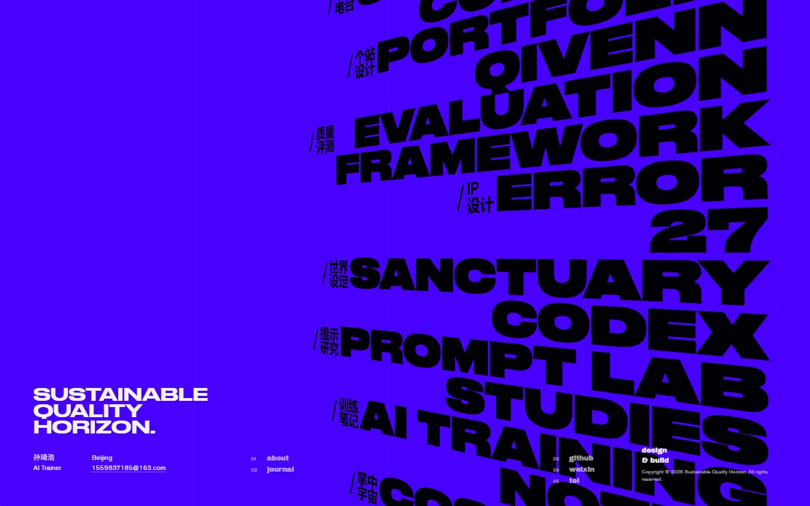
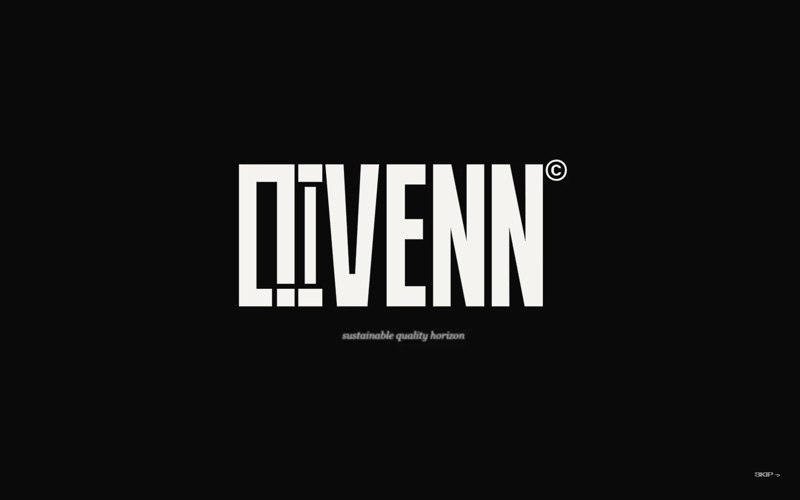
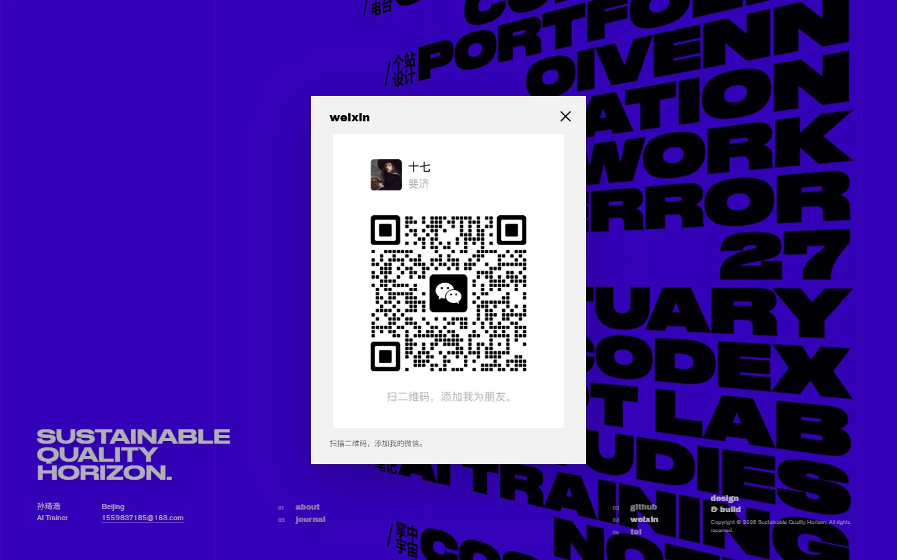

品牌建立
以 QIVENN 作为个人品牌名称，以蓝紫主场景和黑色大标题保持鲜明识别。
2026 / Personal Portfolio Website
QIVENN 是为个人作品集建立的品牌名。网站以蓝紫色主场景承载持续滚动的作品标题，用黑色描线到实体的开屏标识、项目过渡动效与清晰的详情页结构，把视觉创作、AI 工作方法和互动原型组织在同一个入口中。

真实界面截图：右侧黑色标题既构成页面节奏，也直接进入每一项作品；左下角保留个人身份与联系入口，让首屏同时承担导航与品牌表达。
从名称、字标到项目进入方式，网站建立了一套可以被反复使用的个人品牌体验。

字母线条完整描绘后转为实体标识，右上角角标共同形成进入作品集前的品牌记忆。

首页可直接唤起微信二维码与电话入口，作品观看与沟通路径保持连贯。
页面不是一个展示壳，而是不断承接新作品的内容系统：从设定集、IP 设计到交互装置与私人电台，都需要相同的进入逻辑与阅读节奏。
以 QIVENN 作为个人品牌名称，以蓝紫主场景和黑色大标题保持鲜明识别。
开屏描线、标题滑入与滚动响应连接首页和详情页的观看节奏。
将 IP、世界观、电台与交互项目整理为可继续增加素材的详情页面。
重图集转换为 WebP，并控制开屏仅在本次浏览会话首次进入时播放。
本页图像均截取自正在发布的个人网站界面。当前站点将品牌、作品展示、联系方式与性能处理合并为同一个持续维护的作品集项目。